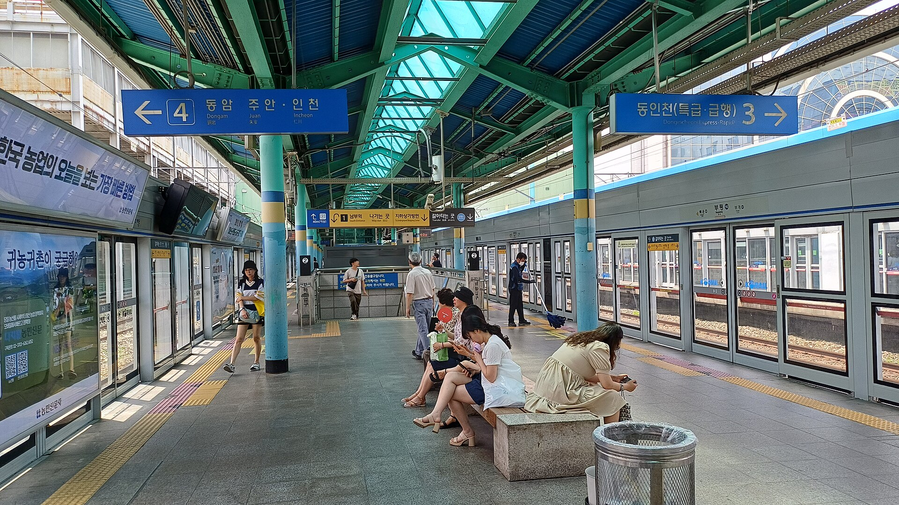
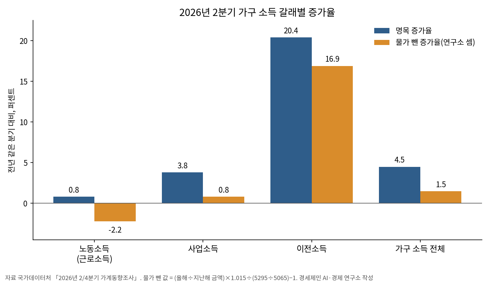
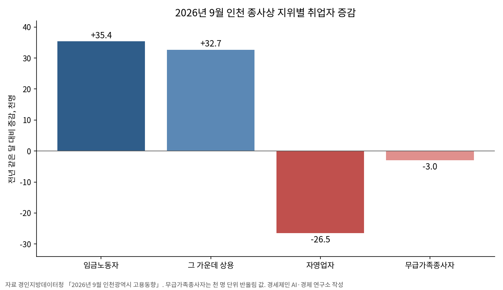

[일자리·임금] 가계소득 늘어난 몫의 69%는 나랏돈이었다
2분기 근로소득 0.8% 증가, 물가를 빼면 2.2% 줄어
늘어난 임금근로자 열에 아홉은 비정규직, 정규직과 임금 격차 194만원
인천은 고용률 내리고 실업률 올라 전국과 거꾸로 움직여
AI경세제민=김갑봉 기자 | 3분기 한국 경제가 1.0% 성장했다. 실질 국내총소득은 1년 전보다 18.8% 늘었다. 1977년 4분기 뒤 48년 9개월 만에 가장 높은 증가율이다. 민간소비는 0.2% 줄었다.
나라가 번 돈은 반세기 가까이 만에 가장 크게 불었는데 가계는 씀씀이를 줄였다. 이 글은 그 틈을 가계소득의 갈래와 일자리의 얼굴, 인천의 고용으로 나눠 센다.

나라 소득은 1977년 뒤 가장 크게 늘었다
한국은행이 10월 27일 낸 속보로 3분기 실질 국내총생산은 전기보다 1.0%, 1년 전보다 3.4% 늘었다. 한국은행이 8월에 내다본 3분기 성장률 0.3%를 크게 웃돈 값이다.
설비투자가 4.1%, 정부소비가 1.9%, 수출이 2.3% 늘었다. 설비투자는 반도체제조용기계 같은 기계류가, 정부소비는 물건비와 건강보험급여비 지출이 이끌었다.
민간소비만 0.2% 줄어 감소로 돌아섰다. 승용차·가전제품 같은 재화와 금융·음식 같은 서비스 씀씀이가 모두 줄었다. 1년 전보다는 1.1% 늘어 오름세가 약하다.
성장 기여도로 보면 내수가 0.9%포인트, 순수출이 0.1%포인트다. 내수의 힘은 기업 설비와 정부 지출에서 나왔다. 가계의 씀씀이는 3분기 성장에 보태지 못했다.
실질 국내총소득은 국내에서 번 소득으로 실제로 살 수 있는 양이다. 수출품 값이 수입품 값보다 크게 오르면 같은 생산으로 더 많이 사들일 수 있다. 그래서 생산보다 소득이 빨리 는다.
올해 성장률도 높아진다. 한국은행은 4분기 성장률이 전기 대비 0%여도 연간 성장률이 산술적으로 3.6%가 나온다고 설명했다. 성장 숫자만 보면 호황이다.
1번 대주제 브리핑은 그 소득이 임금보다 영업잉여 쪽으로 더 빨리 갔다고 셌다. 이번에는 가계 쪽에서 본다. 가계소득은 무엇으로 늘었고 일자리는 어떤 얼굴로 늘었나가 이 글의 물음이다.
겉으로 본 일자리 숫자는 나쁘지 않다. 9월 취업자는 1년 전보다 11만3000명 늘었다. 15~64세 고용률은 70.6%로 0.2%포인트 올랐고 실업률은 2.0%로 0.1%포인트 내렸다.
전국 수치 옆에 인천을 세운다. 수출 호황이 수도권 안에서도 고루 닿는지는 지역 통계로 따로 세어야 한다. 인천은 9월에 고용률과 실업률 모두 전국과 다른 길을 걸었다.
무엇을 어떻게 셌나
자료는 국가데이터처 「2/4분기 가계동향조사」와 「8월 근로형태별 부가조사」, 「9월 고용동향」이 중심이다. 인천은 경인지방데이터청 「9월 인천광역시 고용동향」 원문을 읽었다.
3분기 국내총생산은 한국은행 보도자료 원문으로, 실질임금은 고용노동부 「8월 사업체노동력조사」로 더했다. 원문에 없는 값은 언론 셋이 같게 적었을 때만 썼다.
3분기 가계동향은 아직 나오지 않았다. 그래서 가계소득은 가장 최근인 2분기 자료로 센다. 3분기 성장과 2분기 가계 사이의 시차는 이 글의 한계이고, 3분기 자료가 나오면 다시 맞댄다.
가계동향 보도자료는 전국 1인 이상 가구를 기준으로 하고 시도별 값을 싣지 않는다. 그래서 인천은 소득 대신 고용 통계로 본다. 인천 가계의 소득은 지역소득 통계가 나오면 다시 센다.
가공 지표는 다섯이다. 첫째 공적이전 몫은 공적이전소득 증가액을 가구 소득 증가액으로 나눈 값이다. 공적이전소득은 연금과 수당, 지원금처럼 나라가 가계에 주는 돈이다.
둘째 물가 뺀 근로소득 증가율이다. 가계동향은 실질소득만 내고 실질 근로소득은 내지 않는다. 그래서 명목소득과 실질소득 증가율 차이로 물가 몫을 거꾸로 셌다.
식은 (올해 근로소득÷지난해 근로소득)×(1+실질소득 증가율)÷(올해 소득÷지난해 소득)−1이다. 연구소의 근사치다. 같은 분기 소비자물가 평균과 견줘 어긋나지 않음을 확인했다.
셋째 비정규직 몫은 비정규직 증가를 임금근로자 증가로 나눈 값이다. 넷째 임금 인상액 배수는 정규직 월평균 임금 증가액을 비정규직 증가액으로 나눈 값이다.
다섯째 인천 고용률 엇갈림은 인천 15~64세 고용률 증감에서 전국 증감을 뺀 값이다. 두 지역의 흐름이 갈린 폭이다. 모두 발표된 값으로 셈만 했고 회귀나 계수 추정은 하지 않았다.
모든 수치는 기관 원문과 언론을 세 차례 맞댔다. 가공 지표는 계산을 두 번 되풀이해 값이 같음을 확인했다. 반올림은 소수 첫째 자리에서 했다. 한 곳에만 나온 값은 뺐다.
가계소득을 끌어올린 것은 월급이 아니었다
2분기 가구당 월평균 소득은 529만5000원으로 1년 전보다 4.5% 늘었다. 근로소득은 321만8000원으로 0.8% 늘었고 사업소득은 3.8%, 이전소득은 20.4% 늘었다.
공적이전소득은 57만3000원에서 73만1000원으로 27.6% 불었다. 언론은 고유가 피해지원금을 주된 까닭으로 들었다. 중동발 유가 충격이 가계 지원금으로 이어졌다.
가구 소득은 1년 새 23만원 늘었고 그 가운데 15만8000원이 공적이전이다. 공적이전 몫은 68.7%다. 같은 때 근로소득은 2만4000원 느는 데 그쳤다.

물가를 빼면 더 또렷하다. 실질소득은 1.5% 늘었지만 물가 뺀 근로소득 증가율은 -2.2%다. 일해서 번 돈의 구매력이 1년 새 줄었고 사업소득도 물가를 빼면 0.8% 느는 데 그쳤다.
분배 지표는 나아졌다. 균등화 처분가능소득 5분위 배율은 4.97배로 1년 전 5.45배보다 낮아졌다. 가구원 수를 감안한 상위 20%와 하위 20% 소득의 차이가 좁혀졌다는 뜻이다.
4.97배는 2019년 통계 개편 뒤 가장 낮다. 국가데이터처는 1분위 소득 증가에 고유가 피해지원금 같은 공적이전소득이 크게 작용했다고 설명했다. 같은 일은 6년 전에도 있었다.
1차 긴급재난지원금이 풀린 2020년 2분기 배율은 5.03배였다. 지원금이 빠진 2021년 2분기에는 5.59배로 다시 벌어졌다. 분배 지표는 지원금이 든 분기에 좁혀졌다.
하위 20% 가구의 살림은 여전히 빠듯하다. 1분위 처분가능소득은 109만4000원이고 평균소비성향은 125.3%다. 쓸 수 있는 돈보다 한 달 27만원 넘게 더 쓴다.
후생경제학으로 보면 분배가 나아진 것은 반가운 일이다. 다만 그 개선은 일해서 번 소득이 아니라 나라가 준 돈에서 나왔다. 지원금이 줄면 배율이 다시 벌어질 수 있다.
『21세기 자본』의 눈으로 보면 가구 소득에서 근로소득이 차지하는 몫은 1년 새 63.1%에서 60.8%로 내렸다. 일해서 번 돈의 무게가 줄고 이전소득의 무게가 늘었다.
늘어난 일자리 열에 아홉은 비정규직이었다
8월 임금근로자는 2252만6000명으로 1년 전보다 11만3000명 늘었다. 이 가운데 비정규직이 10만3000명이다. 비정규직 몫은 91.2%로 정규직 증가는 1만명에 그쳤다.
비정규직은 867만1000명, 임금근로자의 38.5%다. 시간제가 15만2000명 늘어 438만2000명이 됐다. 비정규직의 국민연금 가입률은 36.5%로 0.6%포인트 내렸다.
임금 격차는 더 벌어졌다. 6~8월 정규직 월평균 임금은 405만2000원으로 15만6000원 올랐다. 비정규직은 211만2000원으로 2만4000원 올랐다. 임금 인상액 배수는 6.5다.
두 임금의 차이는 194만원으로 1년 전 180만8000원보다 커져 2004년 뒤 가장 크다. 비정규직 임금은 정규직의 52.1%다. 늘어난 일자리가 낮은 임금 쪽에 몰렸다.
9월 숙박·음식점업 취업자는 9만7000명 줄었다. 고용원 있는 자영업자는 8000명 줄고 고용원 없는 자영업자는 4만9000명 늘었다. 혼자 일하는 사장이 늘었다.

인천은 전국과 거꾸로 움직였다. 9월 인천 15~64세 고용률은 70.1%로 0.6%포인트 내렸다. 전국은 0.2%포인트 올랐다. 인천 고용률 엇갈림은 0.8%포인트다.
인천 실업률은 2.4%로 0.3%포인트 올랐다. 취업자는 175만9000명으로 6000명 느는 데 그쳤다. 3분기 인천 청년 실업률은 7.7%로 1년 전 5.9%보다 높다.
속을 보면 엇갈림이 크다. 인천 임금근로자는 3만5400명 늘었고 그 가운데 상용이 3만2700명이다. 자영업자는 30만8800명에서 28만2300명으로 2만6500명(8.6%) 줄었다.
도소매·숙박·음식점업 취업자는 1만1000명(3.7%) 줄었다. 15~29세 취업자는 1만900명 줄고 60세 이상은 1만4600명 늘었다. 인천 청년의 일자리 문은 좁아졌다.
지리경제학으로 보면 같은 수도권 안에서도 호황의 온도가 다르다. 줄어든 자영업자가 임금근로자로 옮겨 갔는지, 문을 닫고 일을 떠났는지는 이 표로 가를 수 없다.
물어야 할 것과 제언
첫째는 지원금 뒤의 소득이다. 파커 외(2013)는 미국 2008년 경기부양 지급금을 받은 가구가 석 달 동안 지급액의 12~30%를 비내구재에 썼다고 실증했다. 지원금의 힘은 한때다.
3분기 민간소비 감소가 2분기 지원금 효과가 줄어든 결과인지는 아직 가를 수 없다. 3분기 가계동향이 나오면 근로소득과 이전소득의 몫을 다시 셀 수 있다.
둘째는 실질임금이다. 고용노동부 조사로 7월 1인당 월평균 임금은 431만6000원으로 2.5% 올랐지만 실질임금은 0.3% 줄었다. 2027년 최저임금은 1만700원으로 3.7% 오른다.
셋째는 일자리의 질이다. 주상영(2013)은 외환위기 뒤 노동소득분배율 하락이 소비와 투자에 나쁜 영향을 줬다고 실증했다. 비정규직이 늘고 임금 격차가 벌어지면 내수를 받칠 힘이 준다.
넷째는 인천이다. 더스트만 외(2022)는 독일 최저임금 도입 뒤 저임금 노동자가 작은 사업장에서 더 크고 생산성 높은 사업장으로 옮겨 갔다고 실증했다. 인천도 같은 이동인지가 물음이다.
경세제민 AI·경제 연구소는 셋을 제언한다. 국가데이터처는 가계동향 발표 때 일회성 지원금을 뺀 분배 지표와 실질 근로소득 증가율을 함께 내 주기 바란다.
국가데이터처는 근로형태별 부가조사의 시도별 정규·비정규 임금도 보도자료에 실어 주기 바란다. 인천시는 자영업자 감소의 행선지를 폐업 신고와 고용보험 자료로 맞대 공개해야 한다.
이 글의 판단은 3분기 가계동향으로 시험한다. 공적이전소득 증가세가 꺾이고도 5분위 배율이 5배 아래에 머물고 물가 뺀 근로소득이 늘면, 연구소는 이 글의 판단을 거둔다.
다음 주 3번 대주제는 물가다. 장바구니 물가가 일하는 가계의 실질 근로소득을 얼마나 깎는지를 센다. 3분기 가계동향이 나오면 이 글의 수도 다시 센다.
나라 소득이 반세기 가까이 만에 가장 크게 늘어난 올해, 일해서 번 돈의 구매력은 줄었다. 늘어난 가계소득의 열에 일곱은 나랏돈이었고 늘어난 일자리의 열에 아홉은 비정규직이었다. 균형경제학으로 보면 반도체가 번 돈이 월급과 동네 가게 매출로 이어질 때 유효수요가 살고 성장은 경세제민이 된다.
참고문헌
- 주상영, 「노동소득분배율 변동이 내수에 미치는 영향」, 『경제발전연구』 제19권 제2호, 한국경제발전학회, 2013.12., 151~182쪽, https://scholar.kyobobook.co.kr/article/detail/4010023657420
- Parker, J. A., N. S. Souleles, D. S. Johnson and R. McClelland, 「Consumer Spending and the Economic Stimulus Payments of 2008」, 『American Economic Review』 103(6), 2013, 2530~2553쪽, https://ideas.repec.org/a/aea/aecrev/v103y2013i6p2530-53.html
- Dustmann, C., A. Lindner, U. Schönberg, M. Umkehrer and P. vom Berge, 「Reallocation Effects of the Minimum Wage」, 『Quarterly Journal of Economics』 137(1), 2022, 267~328쪽, https://doi.org/10.1093/qje/qjab028
- 김미루·오윤해, 「1차 긴급재난지원금 정책의 효과와 시사점」, KDI 정책포럼 제281호, 한국개발연구원, 2020, https://www.kdi.re.kr/research/focusView?pub_no=16851
- 한국은행 경제통계2국 국민소득총괄팀, "2026년 3/4분기 실질 국내총생산(속보)", 공보 2026-10-22호, 2026.10.27., https://www.bok.or.kr/portal/bbs/B0000501/view.do?nttId=11065944&menuNo=201264
- 국가데이터처 사회통계국 가계수지동향과, "2026년 2/4분기 가계동향조사 결과", 2026.8.27., KDI 경제교육·정보센터 게재, https://eiec.kdi.re.kr/policy/materialView.do?num=285882
- 국가데이터처 사회통계국 고용통계과, "2026년 8월 경제활동인구조사 근로형태별 부가조사 결과", 2026.10.21., KDI 경제교육·정보센터 게재, https://eiec.kdi.re.kr/policy/materialView.do?num=288340
- 국가데이터처, "2026년 9월 고용동향", 2026.10.16., KDI 경제교육·정보센터 게재, https://eiec.kdi.re.kr/policy/materialView.do?num=288191
- 경인지방데이터청·인천광역시 경제정책과, "2026년 9월 인천광역시 고용동향", 2026.10.16. 공표(10.18. 게시), https://www.incheon.go.kr/jobs/main/pst/list.do?pst_id=m_job_trend
- 고용노동부 노동시장조사과, "2026년 8월 사업체노동력조사 및 2026년 4월 시도별 임금·근로시간조사 결과", 2026.9.30., KDI 경제교육·정보센터 게재, https://eiec.kdi.re.kr/policy/materialView.do?num=287627
- 박가연, "반도체 수출 호조에 3분기 GDP 1.0% 성장…GDI 49년 만에 최고", 뉴스핌, 2026.10.27., https://www.newspim.com/news/view/20261027000018
- 최민경, "3분기 GDP 1.0% 성장…반도체 호황에 연간 3.7% 성장 가시권", 머니투데이, 2026.10.27., https://www.mt.co.kr/economy/2026/10/27/2026102709392085536
- 김용훈, "4~6월 가구소득 4.5%↑…근로소득은 0.8% '찔끔', 나랏돈이 끌어올렸다", 헤럴드경제, 2026.8.26., https://www.heraldk.com/article/2026082620003918464
- 김현동, "고유가지원금이 가린 소득 감소…2분기 실질 근로소득 사실상 뒷걸음질", 아이뉴스24, 2026.8.27., https://www.inews24.com/view/1998873
- 김성훈, "고소득 月 1115만원 벌 때 저소득 128만원…고유가지원금에 격차는↓", SBS Biz, 2026.8.27., https://biz.sbs.co.kr/amp/article/20000331092
- 지웅배, "비정규직 월급, 정규직의 절반 겨우 넘어…임금격차 '역대 최대'", SBS Biz, 2026.10.21., https://biz.sbs.co.kr/amp/article/20000341259
- 이대희, "정규직 405만원·비정규직 211만원…또 벌어진 월급 격차", 연합뉴스(한민족센터 게재), 2026.10.21., https://www.koreancenter.or.kr/news/articleView.html?idxno=1427634
- 박상영, "'이런 격차 처음본다'…정규직 405만원, 비정규직 211만원으로 월급 무려 194만원 차이", 경향신문, 2026.10.21., https://khan.co.kr/article/202610211200011
- 조용훈, "(영상)재난금 사라진 2분기 가계소득, 4년만에 '뚝'…소득격차 심화", 뉴스토마토, 2021.8.19., https://newstomato.com/ReadNews.aspx?no=1067882
- 양길모, "2027년 최저임금 시급 1만700원 확정…3.7% 인상", 아이뉴스24, 2026.7.15., https://v.daum.net/v/20260715085108633
사진·도표 출처
- [사진1] Striker9498, "20250703 1호선 부평역 승강장.jpg", 위키미디어 공용, CC0, 2025.7.3. 촬영, https://commons.wikimedia.org/wiki/File:20250703_1호선_부평역_승강장.jpg
- [사진2] Ulrich Walder, "Banchan in a traditional market.jpg", 위키미디어 공용, CC0, 2014.10.26. 촬영, https://commons.wikimedia.org/wiki/File:Banchan_in_a_traditional_market.jpg
- [사진3] Daderot, "Market restaurant in Seoul, Korea - DSC00698.JPG", 위키미디어 공용, CC0, 2011.12.3. 촬영, https://commons.wikimedia.org/wiki/File:Market_restaurant_in_Seoul,_Korea_-_DSC00698.JPG
- [도표1] 경세제민 AI·경제 연구소 작성, 자료 국가데이터처 「2026년 2/4분기 가계동향조사」(2026.8.27.)
- [도표2] 경세제민 AI·경제 연구소 작성, 자료 경인지방데이터청 「2026년 9월 인천광역시 고용동향」(2026.10.16.)
관련기사
- [거시경제] 이윤은 18.5% 늘고 임금은 1.9% 늘었다
- [한국경제 8대 불편한 진실⑤] 자영업자 빚 1095조원, 혼자 일하는 사장이 늘었다
- 수출 1209억달러 역대 최대, 제조업 고용보험 가입자는 외국인 빼면 4000명 줄어
- [가계부채 브리핑] 가계대출 9개월 만에 2조2000억원 감소, 주택담보대출은 3조3000억원 늘어
저작권자 © AI경세제민 무단전재 및 재배포, AI학습 및 활용 금지